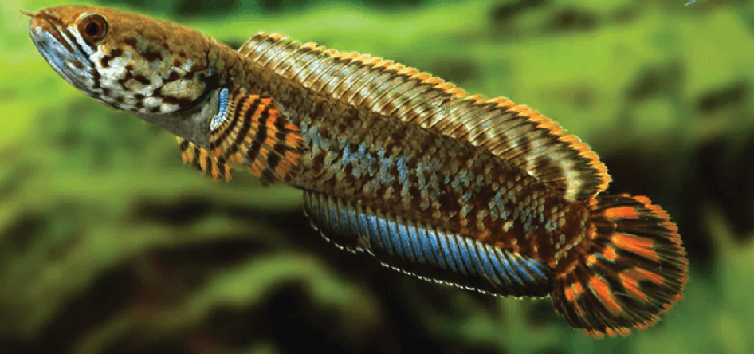

Systématique
- Ordre : Channiformes
- Famille : Channidae
- Genre : Channa
- Espèce : C. bleheri
- Groupe : Groupe gachua
- Auteur : Britz & Kottelat, 2000

Channa bleheri, la tête de serpent arc-en-ciel ou rainbow snakehead, est la plus petite et la plus colorée espèce du genre Channa, atteignant 18 à 20 cm de longueur standard à l'état adulte. C'est un petit prédateur carnivore d'Inde du nord-est très apprécié pour ses couleurs spectaculaires et son comportement fascinant.
Le corps est rond et allongé, légèrement comprimé latéralement. L'espèce se distingue de tous les autres Channa par l'absence complète de nageoires pelviennes. La coloration de base est remarquablement colorée : dos brunâtre, flancs et ventre marbrés de bleu, vert, brun et rouge. La tête inférieure et les flancs arborent des reflets lumineux iridescents avec de grandes taches rougeâtres. La nageoire dorsale est brun-orangée marquée à son extrémité par deux taches noires, bordée d'un liseré clair. La nageoire anale est bleu avec bord noir puis liseré clair. Les nageoires pectorales sont orange-transparentes avec bandes verticales noires. Le pédoncule caudal arbore une bande brune puis une bande orange; la nageoire caudale est arrondie, noire avec grandes taches irrégulières oranges. Les colorations exactes varient selon les populations naturelles : certaines affichent teintes plus bleutées, d'autres brunâtres ou rougeâtres.
Trait distinctif remarquable du genre Channa : larges écailles céphaliques rappelant les plaques épidermiques des serpents, justifiant le nom anglais "snakehead". Découverte en 1987 par l'ichtyologiste Heiko Bleher, qui lui donna son nom.
Channa bleheri est un poisson paisible et peu agressif en conditions normales, qui occupe naturellement le fond et zones mi-profondes. C'est un chasseur à l'affût qui capture ses proies lentement en s'approchant discrètement. L'espèce peut être maintenue seule ou en couple, occasionnellement en petit groupe (4–5 jeunes) si l'aquarium est vaste. La majorité des individus s'entendent bien une fois adults formant un couple stable.
Cependant, Channa bleheri devient terriblement agressif et territorial en période de reproduction. Le couple défend férocement son nid et sa progéniture contre tout intrus. L'espèce possède un organe supra-branchial (organe labyrinthien des Channidae), lui permettant de respirer l'air atmosphérique et de survivre temporairement hors de l'eau dans un environnement humide. En conditions naturelles, elle peut migrer sur terre en déplacements en S rapides pour atteindre d'autres étendues d'eau. C'est un excellent sauteur et le bac doit être couvert. L'espèce reste peu active excepté lors des périodes d'alimentation ou de défense territoriale.
Mode : ovipare creuseur de terrier; reproduction biparentale.
Contrairement à la majorité des Channa qui sont incubateurs buccaux, C. bleheri creuse un terrier dans le substrat (préférentiellement près de souches d'arbres en nature) où elle pond ses œufs. La femelle initie la parade nuptiale tandis que le mâle sélectionne le site du nid et le prépare. À l'accouplement, le couple étreint à la manière des Anabantiformes, corps vibrant en synchrone. La femelle pond 100 à 150 œufs (rarement plusieurs centaines comme d'autres Channa) qui flottent initialement à la surface, formant un tapis dense. Les deux parents transfèrent ensuite les œufs dans la cavité (nid) où ils flottent jusqu'au plafond.
Les parents ventilent les œufs en alternance. Particularité unique : la femelle pond régulièrement des œufs stériles ("œufs de nourrissage") non fertilisés qui servent de nourriture pour les alevins une fois éclos, ou alternativement les parents produisent un mucus nutritif. L'éclosion intervient après 24 à 48 heures à 26–28°C. Les alevins atteignent la nage libre après 2 semaines. Le couple continue de protéger sa progéniture durant plusieurs semaines, formant un groupe cohérent.
Dimorphisme sexuel : peu marqué. La femelle tend à croître légèrement plus grande et affiche un corps plus profond, particulièrement lors de la maturation ovarienne et de la gravidité. Hors période reproductrice, la distinction est extrêmement difficile. Aucun caractère externe flagrant ne permet une identification certaine.
Espérance de vie : 8 à 12 ans en captivité en conditions optimales. L'espèce demeure robuste une fois bien acclimatée, montrant une excellente adaptation à la vie en aquarium.
Channa bleheri fréquente naturellement les cours d'eau lents, fossés temporaires, zones inondées de rivières et marais du bassin de la rivière Brahmaputra, Assam et Arunachal Pradesh, Inde du nord-est. L'habitat affiche un climat tropical de mousson avec fortes précipitations, forte humidité et températures élevées en été. L'espèce creuse des terriers à proximité de souches d'arbres en zones forestières temporairement inondées; ces terriers servent de refuges durant les mois secs hivernaux.
L'eau affiche une température de 12°C en hiver (période critique) à 28°C en été. L'espèce supporte des variations saisonnières marquées, l'eau pouvant chuter drastiquement après les pluies de mousson d'été. La qualité chimique varie : pH neutre à légèrement alcalin (6–8), dureté modérée (5–12 °dGH). L'oxygénation peut être faible, compensée par l'organe supra-branchial. L'espèce est peu nombreuse naturellement et affiche une préférence pour des microhabitats très spécifiques, d'où son statut de conservation menacé.
Répartition

Origine naturelle :
- Bassin de la rivière Brahmaputra, Inde du nord-est (Assam et Arunachal Pradesh).
- Localité type : Upper Diburu près de Guijam, Assam, Inde.
- Distribution extrêmement restreinte : nord de l'Assam et Dikrong River drainage (Arunachal Pradesh, région Doimukh).
- Aire d'occupation très limitée, endémique de cette région.
Espèce largement disponible en aquariophilie commerciale malgré sa rareté naturelle. Malheureusement « rampamment exploitée » pour le commerce alimentaire et ornemental selon les chercheurs (Goswami et al., 2006). Statut IUCN : Vulnerable (VU). Populations naturelles menacées par perte d'habitat, pollution et surexploitation.
Paramètres de maintenance
Température : 12 à 25°C naturellement; en captivité 20–28°C, idéalement 24–26°C; ne pas dépasser 30°C longues périodes.
pH : 5,5 à 7,5 (gamme large); pH 6–6,5 optimal pour reproduction.
GH : 5 à 12 °dGH, eau douce à moyennement dure.
Courant : lent à nul; eaux stagnantes ou très lentes naturellement.
Volume conseillé : minimum 200–250 L pour un couple ou individu; 120 cm façade minimum. Très planté avec nombreuses cachettes (roches, branches, racines), substrat épais de sable (au moins 10 cm) pour permettre creusage de terrier, éclairage faible, couvercle obligatoire.
Régime alimentaire
Régime : carnivore prédateur strict; se nourrit essentiellement de proies vivantes en nature.
En aquarium, accepte proies vivantes (petits poissons, artémias, vers de vase), aliments congelés (vers de sang, moules, crevettes décortiquées, chair de poisson) mais refuse catégoriquement la nourriture sèche ou en poudre. L'espèce chasse à l'affût, approchant lentement les proies avant capture rapide de la bouche en succion.
Distribution modérée : 1 fois par jour en petites portions. Arrêt de l'alimentation possible durant 1–2 mois en hiver pour simuler les conditions naturelles de saison sèche, favorisant la reproduction. Attention : espèce dévore tout ce qui entre dans sa bouche (petits poissons, crevettes).